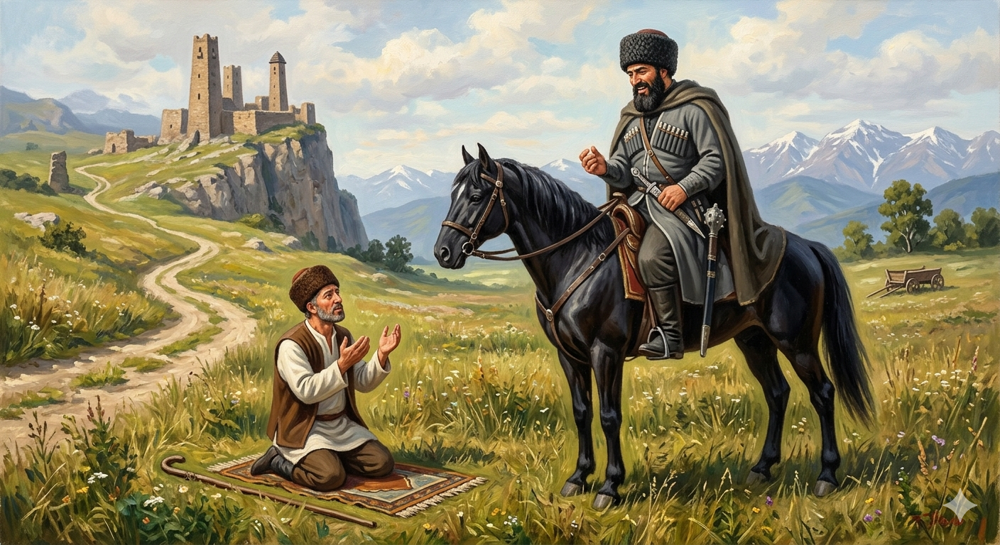

И.А. Дахкильгов. Хьехаме дувцарш - поучительные рассказы-притчи.
И.А. Дахкильгов. Хьехаме дувцарш - поучительные рассказы-притчи. Из ингушского фольклора.

Ламаз дег тӀара де деза
ПӀаьраска дийнахьа, жамаӀата маьждиге водаш, Турпал-Ӏаьлийна бӀаргавейнав, бай тӀа хӀама а тесса, ламаз деш латта цха саг. Ламаз сов сиха деш хиннад цо. Из дезаденнадац Турпал-Ӏаьлийна. Ламаз даь из саг воаллашехьа а, цунна тӀаваха, аьннад Турпал-Ӏаьлас: - ХӀанз, сона а гуш, юха а дӀадоладе ламаз. Сиха а ма дела из. Хьо сихлой, аз укх тураца тӀера корта дӀабохийтаргба хьа! Юха дӀадоладаьд ламаз. Тур даьккха латташ Турпал-Ӏаьла а хиннав. Ламаз ма хулла шорттига деш хиннад. Тоъал ха яьлча, даь даьннад. Хаьтта Турпал-Ӏаьлас: - Ламаз деш дикагӀа маца дар? Ӏа санна сихвенна деш, е сих ца луш, сабаре деш? - ДикагӀа дар хьо тӀавале аз деш хинна ламаз, - аьннад, йоах цу саго, - айса из сиха дой а, Далла дагалоаттавеш дора аз из. Тур а даьккха, Ӏа сога из ламаз шорттига дайтача хана, къегаш хьа тур гуш, Далла дагаахацар сона. - Даьсара, хьо бакъ ма лув – велавеннав Турпал-Ӏаьла, - Хьайна ма та-а де Ӏа ламаз, - аьнна, дӀавахав из.
РУССКИЙ
Молиться надо с душою
Ехал богатырь Али на пятничную молитву и увидел молящегося на лужайке какого-то человека. Молился он слишком быстро, и это не понравилось богатырю Али. Он подъехал, подождал, пока человек не закончит молитву, а затем сказал: - Твори вновь молитву и молись медленно, иначе я снесу тебе голову. Человек начал вновь молиться, причем как можно медленнее. Наконец, молитва окончилась. Богатырь Али спросил: - Ну, как было лучше молиться? Так быстро, как это делал ты, или медленно, как я тебе велел? - Было лучше, когда я молился быстро. При этом я вспоминал имя бога. А когда ты заставил меня молиться медленно, я все думал про твою угрозу и совсем не вспоминал бога. - Ты прав, - рассмеялся богатырь Али и поехал на свою пятничную молитву.
ENGLISH
НОХЧИЙН
ПОГОВОРКИ